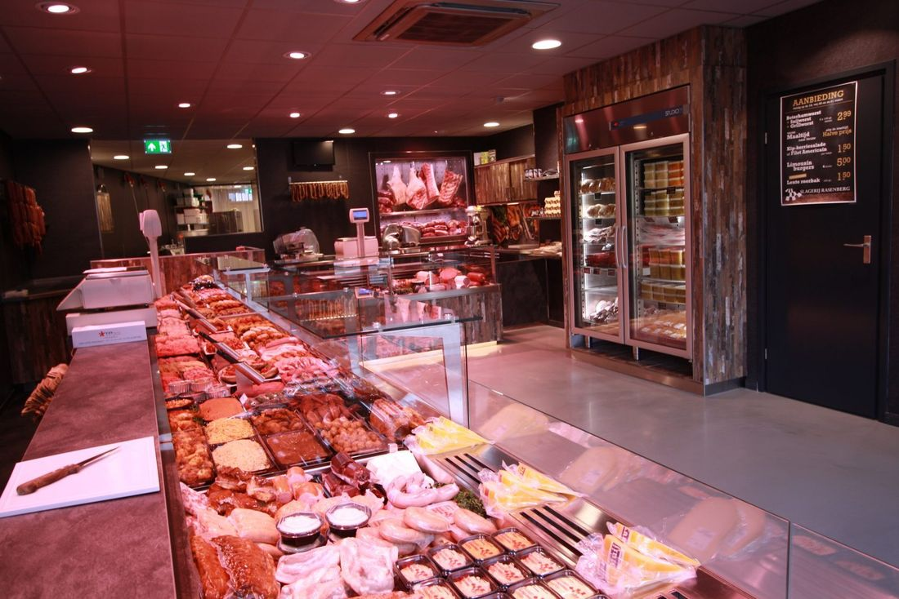
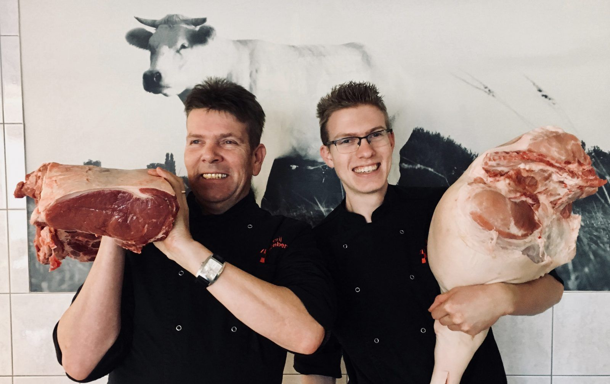
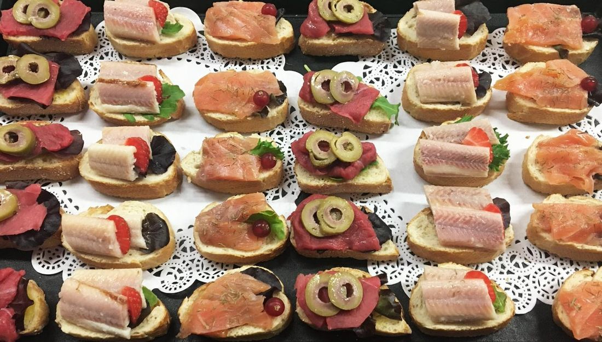
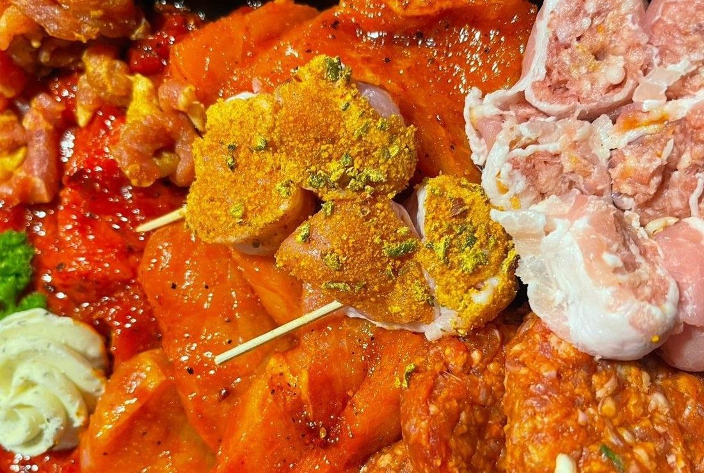
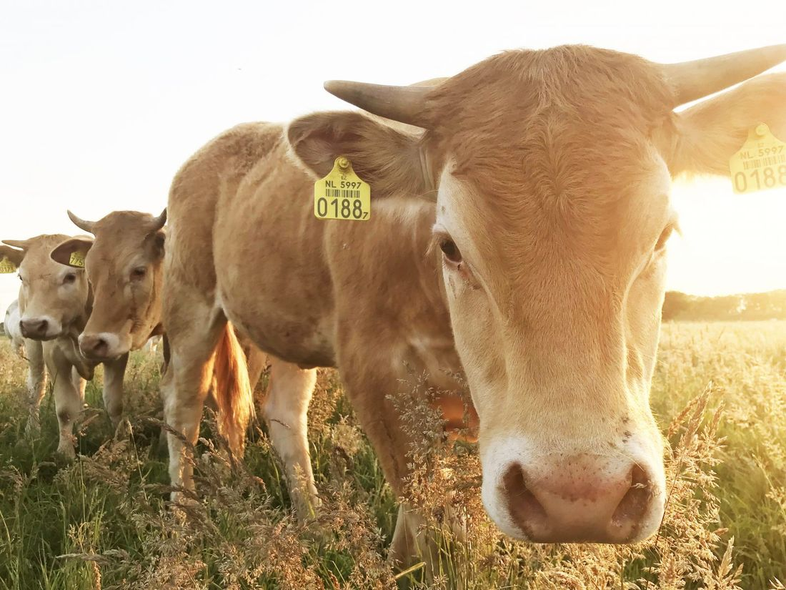
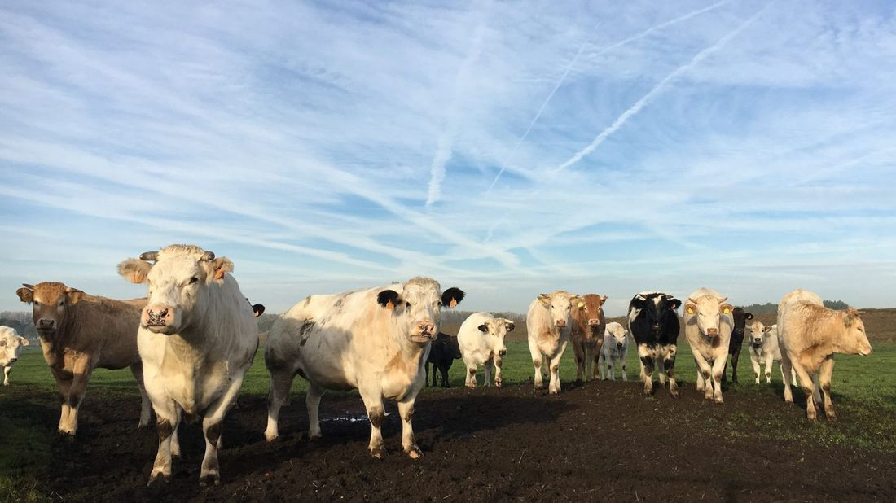
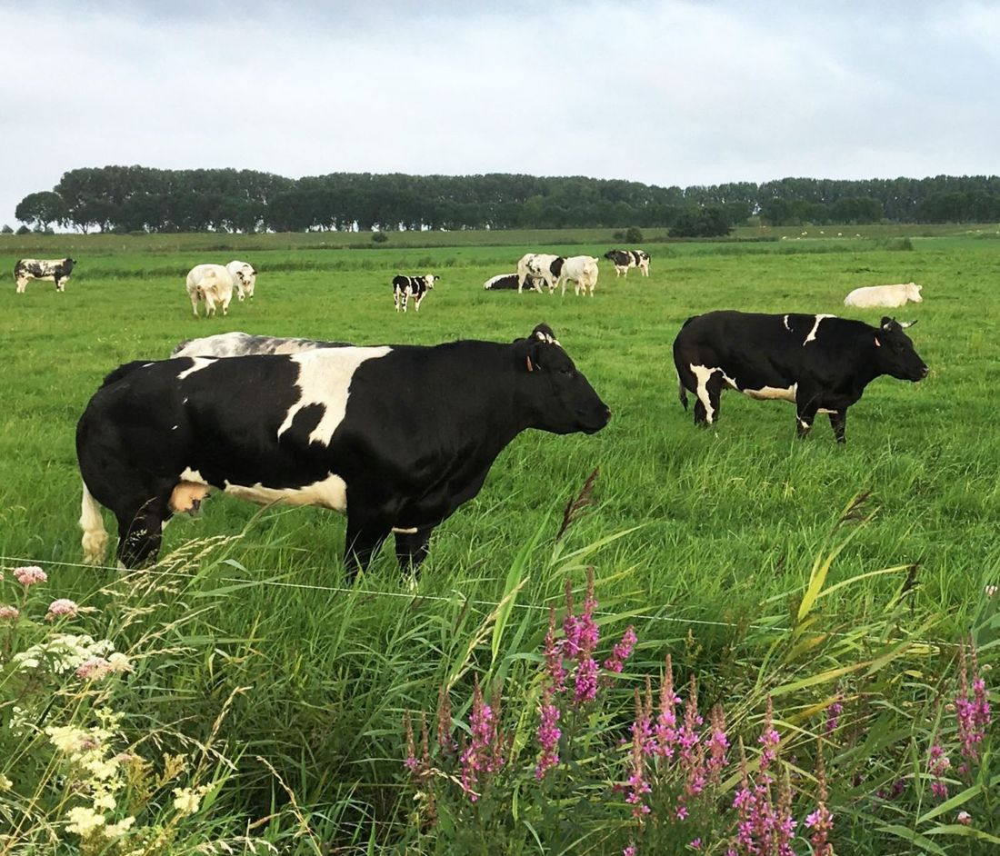
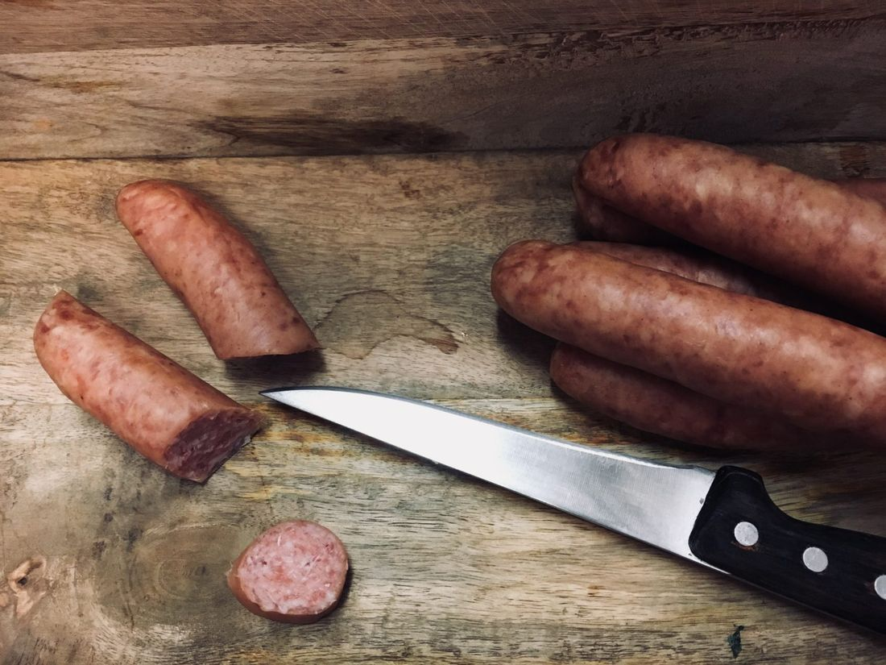
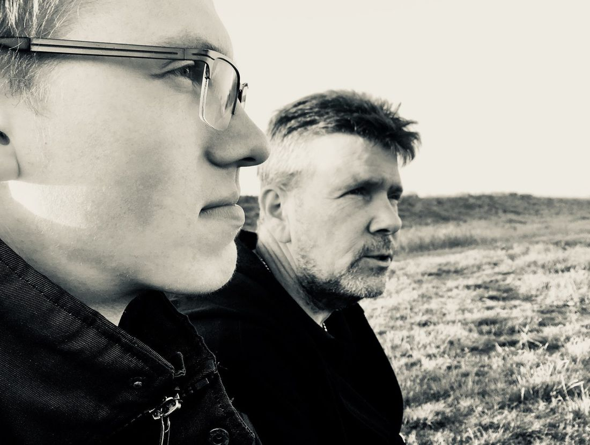

Slagerij
Vlees, vleeswaren, salades en verse maaltijden. Ligt het niet in de toonbank, dan maken we het ter plekke voor u.
Verse maaltijd € 7,50Meer info

Vader en zoon Rasenberg in de Marktstraat in Made. Met rundvlees van onze eigen koeien uit de Zwaluwse polder en worst uit eigen rokerij.
Van een mooi stuk vlees uit de toonbank tot een compleet verzorgd feest.

Vlees, vleeswaren, salades en verse maaltijden. Ligt het niet in de toonbank, dan maken we het ter plekke voor u.

Buffetten, hapjes en borrelschalen, met vlees uit onze eigen slagerij. Of een feest dat we van begin tot eind verzorgen.

Barbecuepakketten en gourmet- en fondueschalen. Saté, spiesen en worstjes maken we zelf, in de zomer elke dag vers.



Ons rundvlees komt van het Groenmarkt Rund: onze eigen koeien. Van het vroege voorjaar tot laat in de herfst grazen ze in een grote kudde in de polder bij Hooge Zwaluwe, en elke dag gaan we kijken of ze er gezond en tevreden bij lopen.
Een dier dat goed in zijn vel zit en geen stress heeft, levert een veel mooier stuk vlees op.
"Van dieren krijg je altijd terug wat je geeft."

Jasper is naast vakslager ook ambachtelijk worstmaker. Onze specialiteit is rookworst uit eigen rokerij, en bloedworst en zult maken we nog volgens oud familierecept.

"Een goede slager is volgens ons iemand die de kennis en technieken van vandaag met de kwaliteit van het slagersambacht van vroeger combineert."
Jan opende in 1994 zijn eigen slagerij in de Marktstraat in Made. In 2006 kwam de catering erbij, die we runnen vanuit een grote keukenstudio aan huis. Jasper leerde het vak op de SVO en bij slagerij Van de Wijngaart in Prinsenbeek, en heeft sinds 2017 de winkel overgenomen.
In de winkel staan service en gastvrijheid voorop. Vraag gerust advies: we vertellen u graag hoe u uw stuk vlees het lekkerst bereidt.
Weinig tijd? Geef uw bestelling door en wij zetten hem voor u klaar. Op woensdag bezorgen we ook.
Via het formulier hieronder, telefonisch of per mail.
De volgende dag na 12.00 uur staat uw bestelling klaar.
Op woensdag, gratis vanaf € 60 binnen onze regio.